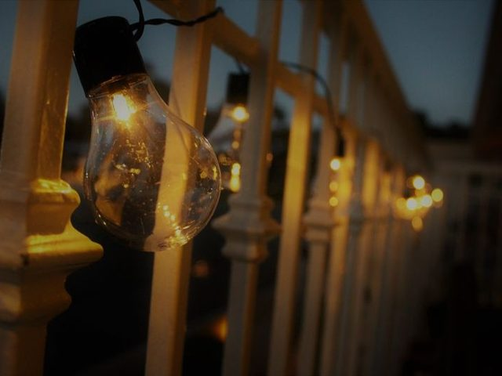
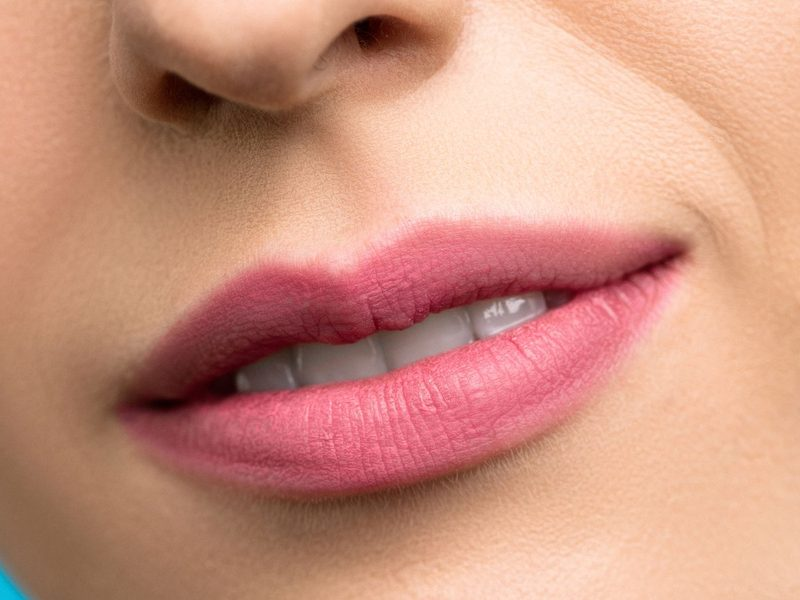
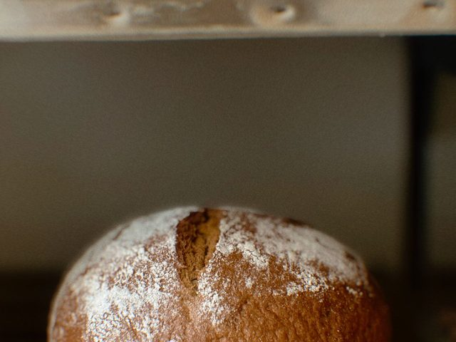
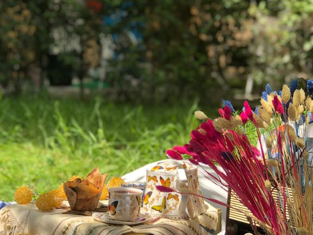

VOCABULARY · WORD UP 單字複習 UNIT 28
L-II．L 開頭（二）
WORD UP「L-II」的 37 個字（lick 到 lunch）。紅色＝要複習，藍色標籤＝WORD UP 標熟記、還要在這裡考對。
共 37 個單字．點 🔊 聽發音
1lickv.
舔
The dog licked my hand.狗舔了我的手。

2lidn.
蓋子
Put the lid on the pot.把鍋蓋蓋上。

3liev./n.
說謊；躺；謊話
說謊 lie-lied-lied；躺 lie-lay-lain
Don't tell a lie.不要說謊。

4lifen.
生活；生命
複數 lives
Life is beautiful.人生很美好。
5liftv./n.
舉起；搭便車；電梯
Can you lift this heavy box?你舉得起這個重箱子嗎？

6lightn./adj./v.
光；燈；輕的；點燃
Turn off the light.關燈。

7lightningn.
閃電
thunder 雷聲
I saw lightning in the sky.我看到天空有閃電。
8likev./prep.
喜歡；像
like + V-ing／to V；look like 看起來像
You look like your mom.你長得像你媽媽。
9likelyadj.
可能的
be likely to V
It is likely to rain tomorrow.明天可能會下雨。
10limitn./v.
限制
speed limit 速限
There is a time limit for the test.這個考試有時間限制。

11linen.
線；行；隊伍
stand in line 排隊
Please stand in line.請排隊。

12linkn./v.
連結；連接
Click on the link.點那個連結。
13lionn.
獅子
The lion is the king of animals.獅子是萬獸之王。

14lipn.
嘴唇
My lips are dry in winter.冬天我的嘴唇很乾。

15liquidn./adj.
液體；液體的
solid 固體
Water is a liquid.水是液體。

16listn.
清單
shopping list 購物清單
Make a shopping list before you go.出門前先列購物清單。

17listenv.
聽
listen to + 東西；t 不發音
Listen to the teacher.聽老師說。
18littleadj./adv.
小的；少的
a little 一點；little 幾乎沒有；接不可數名詞
I have a little money.我有一點錢。

19livev./adj.
居住；活的；現場的
live in + 地點
I live in Taipei.我住在台北。

20loafn.
一條（麵包）
複數 loaves
Mom bought a loaf of bread.媽媽買了一條吐司。

21localadj.
當地的
Let's try some local food.我們來吃點當地美食吧。

22lockv./n.
鎖
Did you lock the door?你鎖門了嗎？
23Londonn.
倫敦
London is the capital of the UK.倫敦是英國的首都。

24lonelyadj.
寂寞的
alone 獨自（事實）
He felt lonely after his friends moved away.朋友們搬走後他覺得很寂寞。
25longadj./adv.
長的；長久
How long…? 多久
How long have you lived here?你住在這裡多久了？

26lookv.
看；看起來
look at／look for 找／look after 照顧
I'm looking for my glasses.我在找我的眼鏡。

27losev.
遺失；輸
三態 lose-lost-lost
Our team lost the game.我們隊輸了比賽。
28losern.
輸家
winner 贏家
There is always a winner and a loser.總會有贏家和輸家。
29lossn.
損失；喪失
The fire caused a big loss.那場火災造成很大的損失。
30lotn.
許多
a lot of = lots of
I have a lot of friends.我有很多朋友。
31loudadj.
大聲的
loudly 大聲地
The music is too loud.音樂太大聲了。
32lovev./n.
愛
love + V-ing／to V
I love playing basketball.我超愛打籃球。

33lovelyadj.
可愛的；美好的
-ly 結尾但是形容詞
What a lovely day!多美好的一天！
34lovern.
愛好者；情人
music lover 音樂愛好者
He is a big book lover.他很愛看書。

35lowadj.
低的
high 高的
The price is very low.價格很低。
36luckyadj.
幸運的
luck 運氣
You are so lucky!你真幸運！

37lunchn.
午餐
have lunch
What did you have for lunch?你午餐吃什麼？
FOCUS
重點整理
| 說法 | 中文 | 例子 |
|---|---|---|
| look at / look for / look after | 看 ／ 找 ／ 照顧 | look for my key |
| alone / lonely | 獨自 ／ 寂寞的 | live alone but not lonely |
| a little / little | 一點 ／ 幾乎沒有（不可數） | a little milk |
| lose / loser / loss | 輸、遺失 ／ 輸家 ／ 損失 | lose the game |
| a lot of / lots of | 許多 | a lot of books |
| stand in line | 排隊 | stand in line for tickets |
| be likely to V | 可能會… | likely to snow |
life → lives、loaf → loaves：f 結尾的名詞複數常變成 -ves。